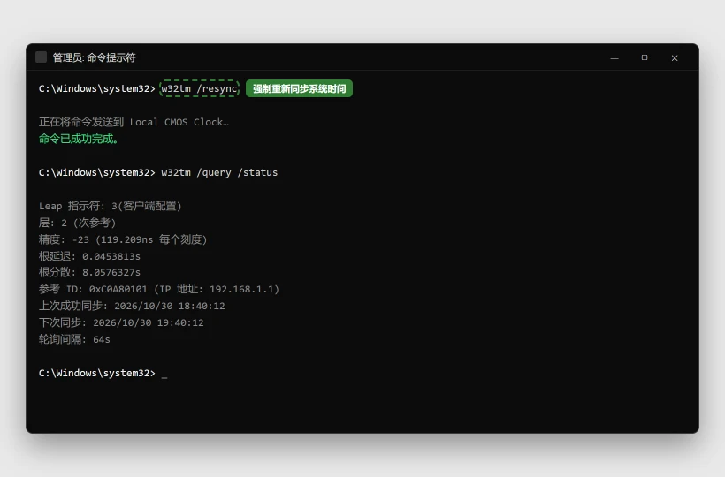

电脑时间总是不对 / 每次开机都变慢怎么办
本文只会恢复时间服务和重新校时，不会改动你的文件。公司域电脑可能由单位服务器统一管理时间，强行改成本地时间服务器反而会引发登录或证书问题。
💡 一句话结论
时间不准先看三个地方：时区是不是选错、自动校时有没有打开、Windows Time 服务是否正常运行。如果关机断电后时间直接归零，软件设置通常救不了，八成是主板纽扣电池没电。
⚡ 30 秒快速排查（先试这个）
- 右键任务栏时间 →“调整日期和时间”，确认“自动设置时间”和时区都正确。
- 点“立即同步”，看提示是成功、超时，还是“时间服务未运行”。
- 关机、拔掉电源等 1 分钟再开机。如果时间直接回到多年前，优先怀疑主板电池，而不是继续重装系统。
纯小白模式 · Windows
小白一键修复
不想研究原因，就下载脚本，右键选择“以管理员身份运行”。脚本执行前仍会再次确认。
- 适合Windows 10/11，时间和时区基本正确，但经常变慢或自动同步失败。
- 脚本会把 Windows Time 服务恢复为自动，连接
time.windows.com并立即校时。 - 运行前确认电脑没有加入公司域；域电脑请先联系 IT，避免覆盖单位校时策略。
- 注意脚本不会改时区，也不会修复已经没电的主板纽扣电池。
运行方式：下载后先解压（如有），右键 BAT 文件 → 以管理员身份运行 → 阅读提示后选择 Y。浏览器若提示“不常见文件”，请先核对文件名与下方源码。若浏览器无法下载，点“复制全部脚本”，粘贴到记事本，保存类型选择“所有文件”，文件名以 .bat 结尾。
查看完整 BAT 源码
@echo off
chcp 65001 >nul
setlocal EnableExtensions
title 修盒子 - 同步 Windows 时间
fltmc >nul 2>&1
if errorlevel 1 (
echo 正在请求管理员权限...
powershell -NoProfile -Command "Start-Process -FilePath '%~f0' -Verb RunAs"
exit /b
)
echo ============================================================
echo 修盒子 - 同步 Windows 时间
echo ============================================================
echo 适用于：每次开机时间都不对、网页提示证书时间错误、
echo 或手动改完时间后很快又变回错误时间。
echo.
echo 将恢复 Windows Time 服务、连接 time.windows.com 并立即校时。
echo 不会修改时区，不会删除文件。
echo 公司域电脑通常由单位服务器统一校时，请先联系 IT。
echo.
choice /C YN /N /M "确认继续？[Y/N] "
if errorlevel 2 goto :cancelled
echo.
echo [1/4] 恢复 Windows Time 服务...
sc config w32time start= auto >nul 2>&1
net stop w32time /y >nul 2>&1
echo [2/4] 配置微软时间服务器...
w32tm /config /manualpeerlist:"time.windows.com,0x8" /syncfromflags:manual /update
echo [3/4] 启动时间服务...
net start w32time >nul 2>&1
echo [4/4] 立即同步...
w32tm /resync /force
if errorlevel 1 (
echo.
echo 首次同步失败，通常是网络、代理或防火墙阻止了 UDP 123 端口。
echo 请检查网络后重新运行；公司域电脑请联系 IT。
) else (
echo.
echo 校时命令已执行。当前状态如下：
w32tm /query /status
)
echo.
echo 完成。请重启一次电脑，再观察时间是否仍然自动跑偏。
echo 若每次关机后时间归零，通常是主板纽扣电池需要更换。
goto :end
:cancelled
echo.
echo 已取消，没有修改任何设置。
:end
echo.
pause
endlocal
适用 / 不适用
适用：
- 每次开机时间都慢几分钟到几小时
- “立即同步”总是失败或提示没有权限
- 浏览器提示网站证书时间不正确
- 手动改对后，过一段时间又自动变错
不适用：
- 时间是 12/24 小时显示不对 → 这是格式设置，不是校时故障
- 公司电脑无法修改时间 → 通常由域策略控制，联系 IT
- 主板明显没电、每次断电都回到 2000 年 → 直接更换纽扣电池
- 电脑自动重启、同时伴随蓝屏 → 看 电脑蓝屏了怎么办
开始前确认
- 知道现在正确的日期、时间和时区
- 电脑能正常联网，浏览器能打开 HTTPS 网站
- 公司域电脑先联系 IT，不要随意修改时间源
- 笔记本先接上电源，避免修复过程中休眠
怎么确认修好了
完成修复后重启电脑，等待 10 分钟再核对网页、手机和任务栏时间；连续关机再开机两次，时间仍然正确。浏览器不再提示证书日期错误，Microsoft Store 和需要登录的软件也能正常打开。
还是不行？
- 每次断电后 BIOS 时间归零 → 更换主板纽扣电池或送修
- 浏览器仍提示证书错误，但系统时间正确 → 检查代理与根证书，参考 企业代理排查
- 时间正确但 Microsoft Store 仍打不开 → Microsoft Store 打不开怎么修
- 公司域电脑一直显示“某些设置由组织管理” → 联系 IT，不要绕过单位策略
预防
- 保持“自动设置时间”和自动时区开启。
- 使用三五年的台式机可提前检查主板电池电压。
- 不要安装来源不明的“时间修正器”或“网络加速器”。
- 出差跨时区后，先确认自动时区是否随位置更新。
更新日志
| 日期 | 版本 | 变更 | 作者/审核 |
|---|---|---|---|
| 2026-10-27 | 1.0 | 首版：时区、自动校时、服务、网络与主板电池判断 | 内容组 |
分步骤
先检查时区和自动设置
目的：选错城市或关闭自动设置时，校时服务再正常也没有用。
操作：
- 右键任务栏时间 →“调整日期和时间”。
- 打开“自动设置时间”，时区选择你当前所在城市（中国大陆通常为
(UTC+08:00) 北京，重庆，香港特别行政区，乌鲁木齐）。 - 点“立即同步”，等待结果。
预期结果：日期、时间和时区立即正确，页面显示同步成功。失败怎么办？
显示同步失败 → 继续步骤 2；修改后重启又恢复错误 → 可能是策略或主板电池，按后续步骤区分。恢复 Windows Time 服务
目的：校时依赖后台时间服务，服务被停止或禁用后“立即同步”一定失败。
操作：
- 优先运行本文 BAT，阅读提示后选择
Y。 - 手动处理时，按
Win+R输入services.msc。 - 找到
Windows Time，把启动类型改为“自动”，点“启动”。 - 回到设置页再次点“立即同步”。
预期结果：服务状态为“正在运行”，设置页同步成功。失败怎么办？
服务启动后又停止 → 打开事件查看器 → Windows 日志 → 系统，记下错误代码；公司域电脑联系 IT。- 优先运行本文 BAT，阅读提示后选择
手动向微软时间服务器校时
目的：图形界面同步失败时，命令行会给出更明确的错误信息。
操作：以管理员身份打开终端，依次运行：

/resync返回「命令已成功完成」就说明对上了；再看上次成功同步的时间是否刚刚更新。w32tm /config /manualpeerlist:"time.windows.com,0x8" /syncfromflags:manual /update Restart-Service w32time w32tm /resync /force w32tm /query /status预期结果：/resync提示命令成功完成，状态里的时间源为time.windows.com。失败怎么办？
提示 RPC 或服务未启动 → 回到步骤 2；提示超时 → 检查代理、防火墙或网络是否阻止 UDP 123 端口。确认不是网络或代理导致校时失败
目的：能打开网页不代表允许 NTP 时间协议通过。
操作：
- 临时断开 VPN、代理或公司网络，改用手机热点测试一次。
- 关闭第三方防火墙的“网络时间保护”或类似功能后再同步。
- 不要在来路不明的网站“在线校时”，只使用 Windows 设置或官方时间服务器。
预期结果：换网络后校时成功，说明原网络拦截了时间协议。失败怎么办？
所有网络都失败 → 记录错误代码；若当前时间偏差太大，先手动把时间改到与手机一致，再重试。判断主板纽扣电池是否没电
目的：软件每次都能修好、断电后又重置，是典型的硬件电池问题。
操作：
- 正常关机并拔掉电源；笔记本可拆电池的机型也取下电池。
- 等待 1-2 分钟后重新开机，观察 BIOS 时间是否归零或回到默认年份。
- 台式机可查主板型号对应的
CR2032纽扣电池；笔记本是否可自行更换要看官方维护手册。 - 在保修期内或电池位于主板背面、需要拆键盘的机型，建议交给官方售后。
预期结果：判断出“只是服务故障”还是“断电后 BIOS 时间立即丢失”。失败怎么办？
不敢拆机就不要硬拆；拍照记录现象，带着型号咨询维修点。
相关教程
最后更新：2026-10-27 · 复核：内容组
读者反馈
这篇教程解决你的问题了吗？
点一下告诉我们结果。「没解决」可以指出问题段落，管理员会回到原文核对并更新。